From the very beginning, my vision has always been to create a sanctuary where every child feels seen, valued, and capable of achieving their fullest potential. Witnessing so many children lose confidence due to feeling unsupported or overwhelmed inspired me to establish a school that goes beyond academics.
I dreamed of a nurturing environment where students could rediscover their voice, believe in themselves, and transform impossibilities into achievements. Through love, care and devotion, we strive to show that with the right emotional guidance, every goal is attainable.
Our mission has always been to walk alongside students on their journey, helping them overcome challenges while knowing they are never alone.
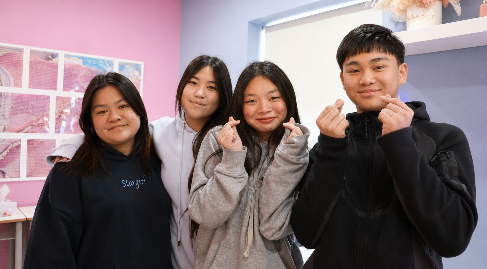
What makes our tutoring school truly special is the heart behind everything we do. We have incredible teachers and genuine care we pour into every single child's journey.
With over 20 years of teaching experience, I've learnt that every child is unique. We meet them where they are, celebrate their wins, guide them through challenges, and remind them every day that they're capable of extraordinary things.
There are no entrance exams here, no barriers about who can or can't learn with us.
If a child wants to grow, succeed, and needs support, they are always welcome. This commitment means we take on challenges and help those who have lost hope or feel like giving up. It's a responsibility we embrace, and it fills me with pride to see the dedication of our team.
Our tutors work tirelessly, and their talent shines through in every success, whether it's a perfect HSC score, a state ranking, or a child discovering a newfound confidence they never thought possible.
We don't believe in one-size-fits-all methods because every child's journey is different. Instead, we personalise every class to address their specific needs, helping them build a strong foundation and lasting confidence. Each lesson is crafted with care, ensuring it's not only useful but also inspiring and engaging. And when it comes to school assessments, it's a partnership between teacher and student that leads to outstanding results.
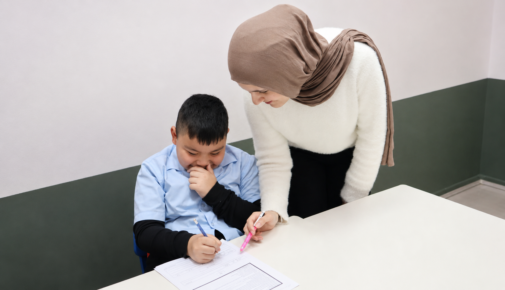
When a student joins DA, we take the time to really get to know them — their strengths, their challenges, their goals, and the ways they learn best. It is never just about academics. We want them to feel confident, curious, and genuinely excited to be in the room.
The placement is never fixed. If a student has outgrown their group, or if a different environment would serve them better, we say so. We do not wait to be asked.
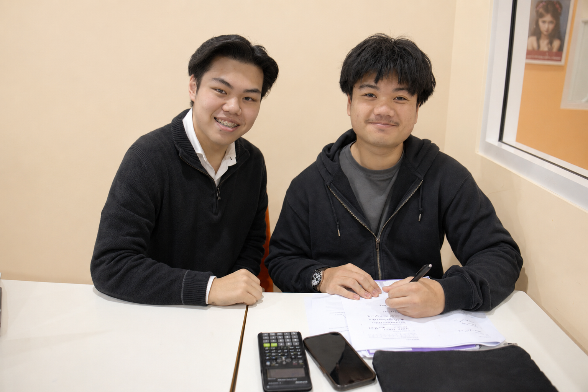
Today's students face immense pressure — high expectations, constant comparison, and a world that moves faster than ever. Many struggle with self-doubt, fear of failure, and the quiet exhaustion of trying to keep up with everything at once.
To succeed in this environment, students need more than content knowledge. They need to be emotionally and mentally steady. Knowing someone genuinely believes in you — that is often the difference between a student who pushes through and one who quietly gives up.
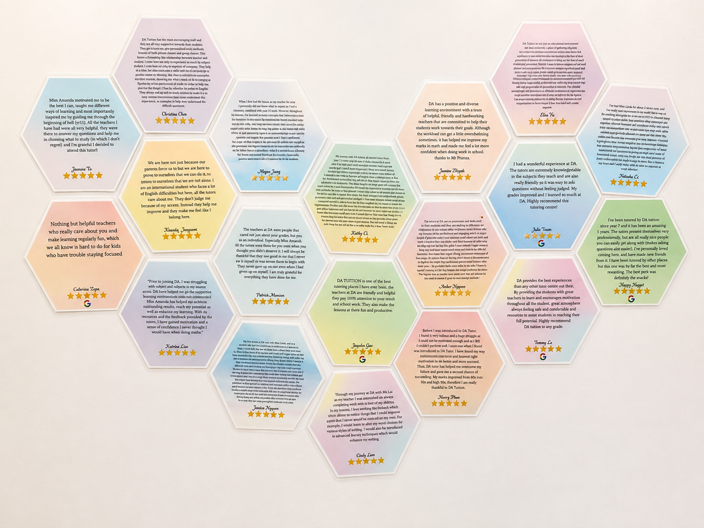
I don't expect anyone to remember me personally. What I hope they'll remember is the heart of this place — the team of teachers who came together with a shared belief: that every child deserves someone who truly believes in them.
Fifty years from now, I dream that the children we've helped will go out into the world as compassionate, capable individuals — carrying with them the values we tried to instil.
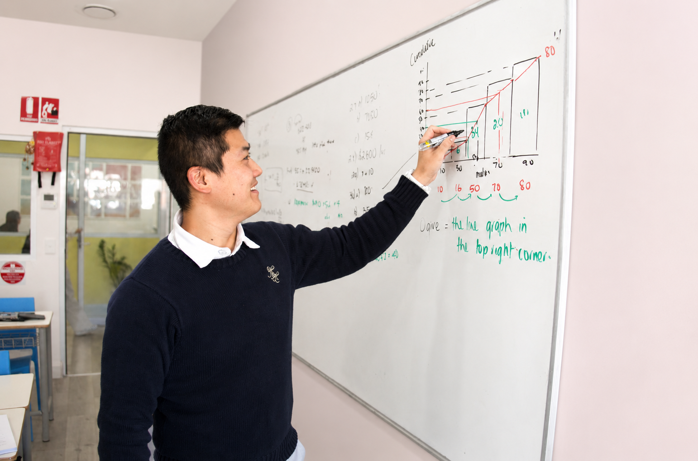
I make sure that we all hold ourselves to the highest standards. Our teachers are the backbone of our school, and they undergo an extensive screening and training process before joining us. But beyond their qualifications, it's their heart and dedication that shine. They go above and beyond to ensure each child feels supported and challenged in the right way. We also provide continuous professional development and encourage collaboration among our staff to keep our methods fresh and effective.
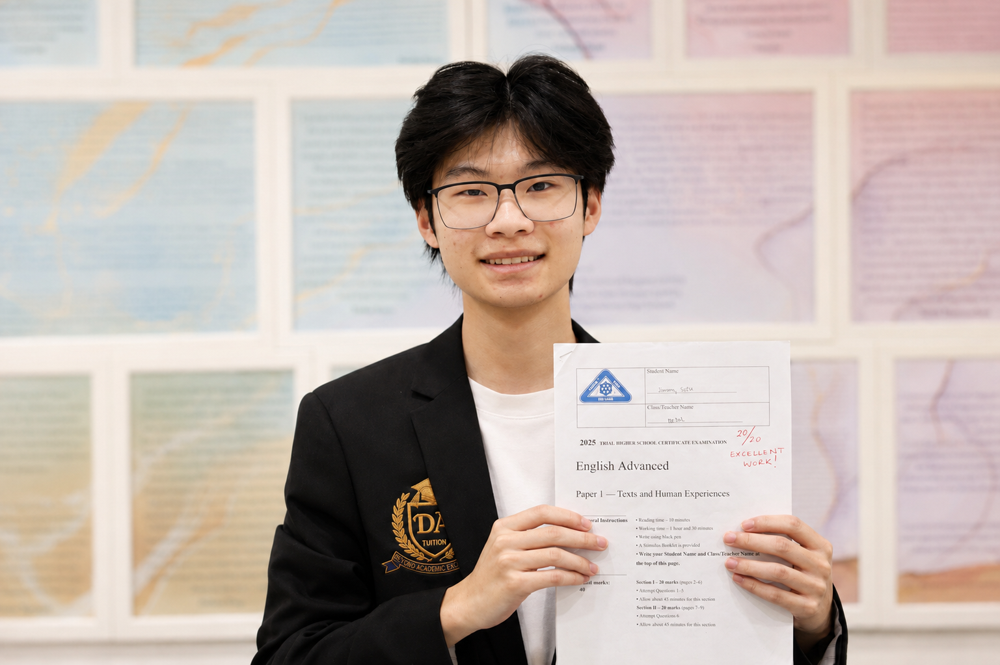
We know how heavy academic pressure can feel, and that's why we work hard to make our school a haven for students. We teach them strategies to manage their workload, break tasks into achievable steps, and focus on progress rather than perfection. But more than that, we listen. Through classes, extra help outside of class, or simply being there for any student who needs to talk, we ensure they know they're never alone in this journey. Sometimes, all a child needs is someone to remind them that they're enough just as they are. Sometimes, just knowing someone believes in them is enough to lighten the load.
When a student joins our school, we take the time to really get to know them, in terms of their strengths, challenges, and goals. It's not just about academics; we want them to feel confident, curious, and excited to learn. Together, we set realistic milestones and work towards them step by step.
As students grow, we adapt to their needs, making sure they stay on track and continue to succeed. By the time students leave, they're not only better learners but also more confident and motivated individuals, ready to tackle whatever comes next.
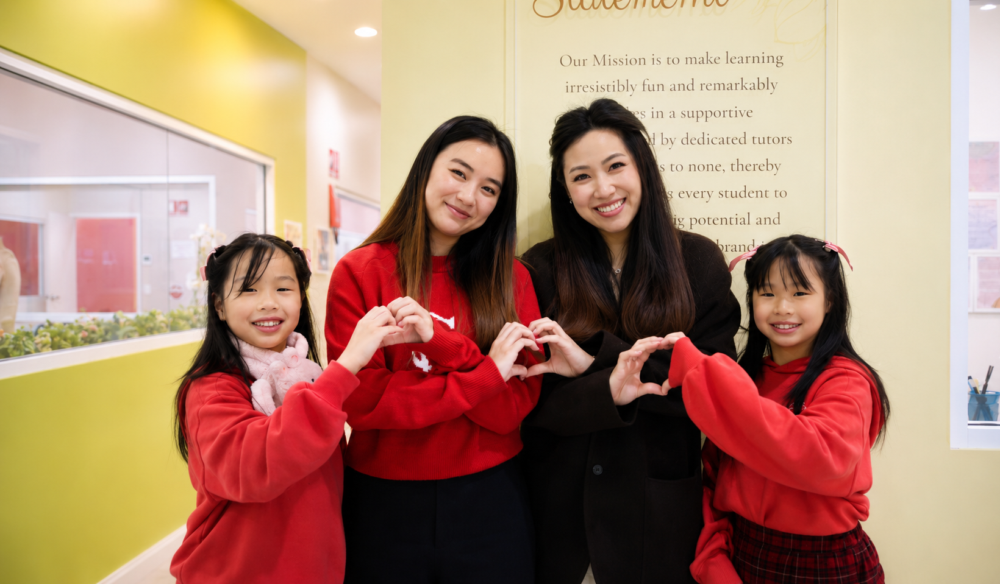
Honestly, it's deeply humbling and joyous to read the heartfelt words of gratitude from our students and their families. Seeing how much they appreciate the dedication and sacrifices of their tutors is a profound reminder of why we do what we do. It fills me with pride to witness the difference our team makes. For us, these students are never just numbers or grades. They are individuals with dreams, fears, and limitless potential. Helping them unlock that potential is a privilege and an honour.
Parents often share how their children have become happier, more motivated, and more confident since joining us, and knowing we've had such a positive impact on their lives is the most meaningful reward we could ever ask for.
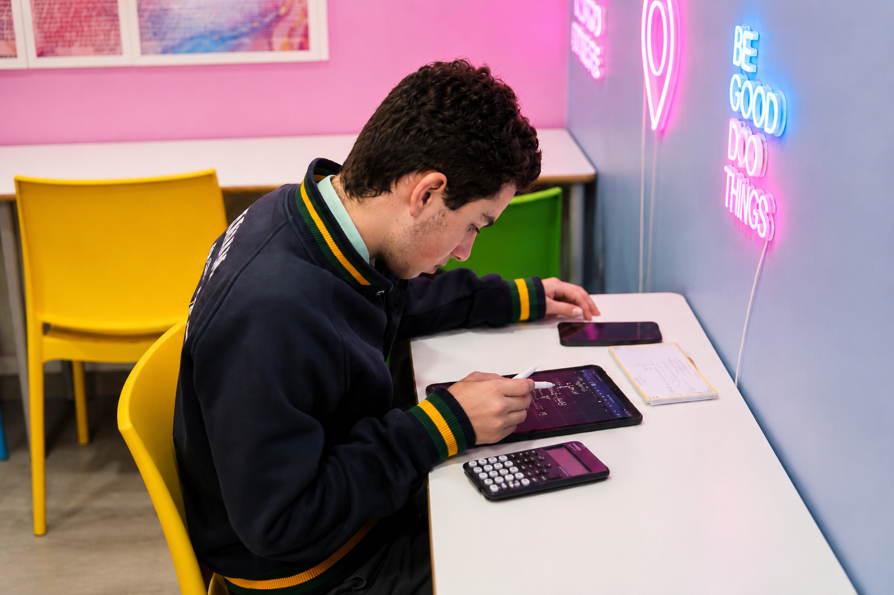
To be successful in 2026, I believe students need to be adaptable and think critically, but above all, they need to be emotionally and mentally strong. It's not easy to juggle everything that comes their way such as pressure from studies, friends and family concerns, but being able to stay steady through it all makes a huge difference.
We know that emotions can sometimes take over and affect focus and motivation. That's why we make it a point in every lesson to help our students build the confidence and resilience they need to tackle challenges head-on and ultimately be successful and proud of themselves.
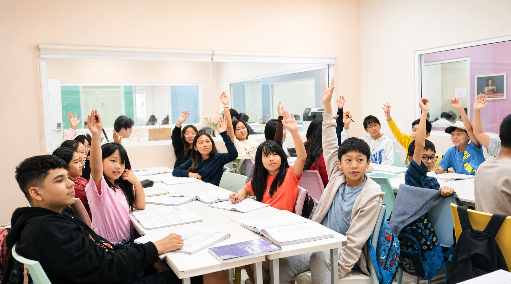
Empathy is at the heart of everything we do. We recognise that academic challenges can be overwhelming, and students need a safe space to express their worries. Encouragement helps them see that mistakes are part of growth, building resilience and self-belief.
We often remind our students that stumbling is okay, rather it's about how you rise afterward. By focusing on their strengths and helping them tackle weaknesses with patience, we instil confidence and optimism that extend far beyond the classroom.
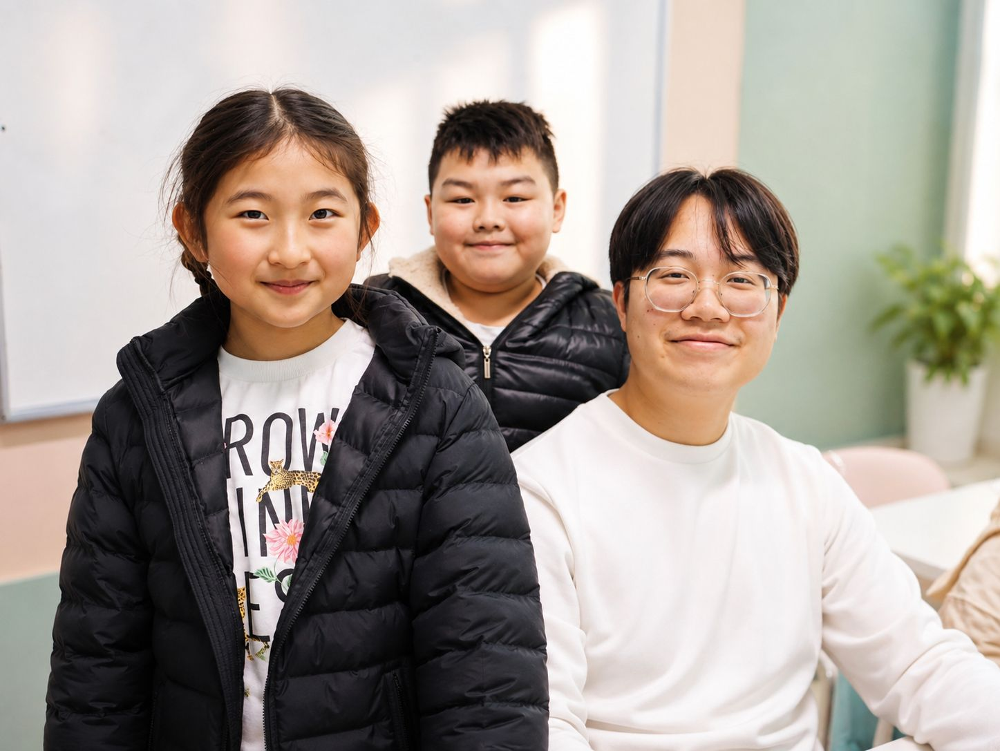
I hold feedback in the highest regard. It's how we grow. We are truly fortunate to receive such open and honest insights from both parents and students. To us, feedback is our promise to continuously create the best possible learning environment for every child. While we initially relied on handwritten forms, I often worried some feedback might be overlooked or that students might feel hesitant to share openly. To address this, we introduced a seamless digital system where students can scan a QR code and share their thoughts directly with me - promptly and confidentially.
Parents often share how their children have become more confident, focused and happy. Students share heartfelt experiences, offering insights or suggestions for adjustments that align with their learning styles. Knowing that they feel truly cared for and understood is the greatest compliment we could ever receive. Each piece of feedback guides us to refine our methods and explore innovative ways to serve our students better.
Education works best when parents, teachers, and students collaborate as a team. Regular parent-teacher meetings and honest communication helps everyone stay aligned on goals and strategies, creating a strong foundation for success. Whether it's tackling academic struggles or celebrating progress, this shared effort creates a clear path forward.
By sharing insights and celebrating progress together, we ensure students feel supported and encouraged to reach their full potential. Our focus is always on what's best for the child, and this teamwork makes all the difference.
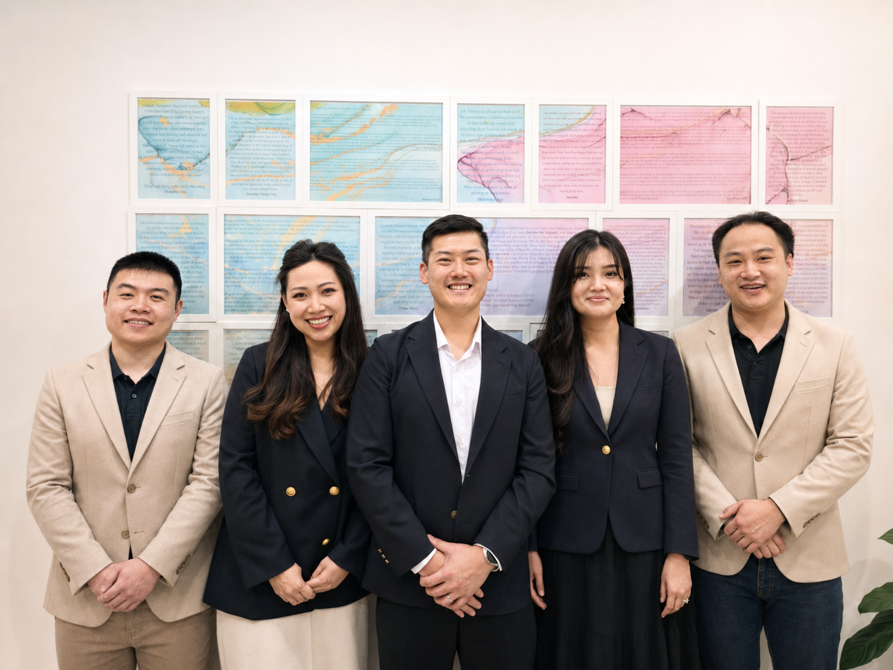
Our long-term goal is to grow without losing the personal touch that makes our school special. We aim to reach more students, expand programs, and stay adaptable to the evolving needs of education. But above all, our goal remains the same: to make a lasting difference in the lives of every child who walks through our doors.
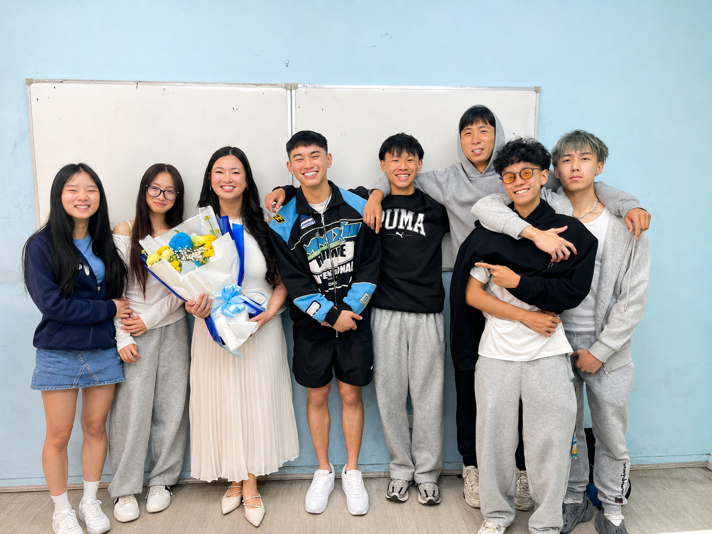
If you ask our teachers, they will all say the same thing: the most rewarding part of our work is witnessing the transformation in a child's eyes when they realise they are capable, valued and supported. Watching students grow, overcome their fears, and achieve their dreams fills my heart with profound gratitude. Knowing that we've been even a small part of their journey, and that the lessons they've learned will guide them for a lifetime, is a privilege we cherish deeply.
There are moments when I hear about our staff staying up late into the night, tirelessly helping a student prepare for an assessment. While I gently remind them to focus on teaching time management, their willingness to go the extra mile fills me with immense pride. It's not uncommon for them to set aside their own work to prioritise their students' needs. These selfless acts reflect the extraordinary love they have for their students and the genuine joy they find in making a difference.
It's moments like these that remind me why I treasure this team so much and why this work holds such profound meaning and fulfilment for all of us.
One story that still brings me to tears is a student who came to us struggling with self-doubt and low grades. He felt defeated, like he couldn't measure up to his peers. Through consistent guidance, encouragement, and a lot of heart-to-heart conversations, we began to see a transformation. That student not only improved academically but also blossomed into a confident, motivated individual. Today, he's a specialist doctor, and his parents still write to us, thanking our team for believing in their child when it mattered most. Stories like these remind us why we do what we do.